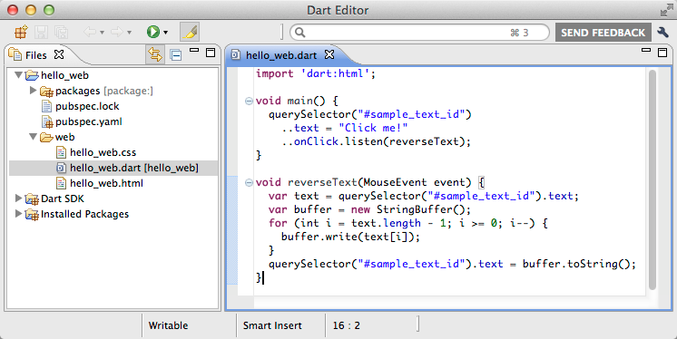
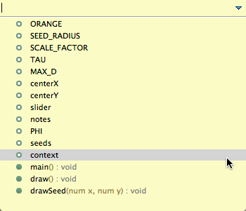
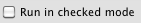

Tips for Using Dart Editor
If you are completely new to using Dart Editor, first read Dart Editor.
Read this page for more tips on using Dart Editor, including information such as specifying a browser and compiling to JavaScript. If you run into a problem, see Troubleshooting Dart Editor.
Viewing samples
The Welcome page of Dart Editor displays a few samples. To open a sample and look at its source code, click the sample’s image.
If you don’t see the Welcome page, you probably closed it. Get it back with Tools > Welcome Page.
Managing the Files view
The Files view shows the files that implement the libraries included in Dart, installed packages, as well as all the apps that you create or open.
Adding apps
Here’s how to open an app, which makes it appear in your Files view:
-
Go to the File menu, and choose Open Existing Folder…. Or use the keyboard shortcut (Ctrl+O or, on Mac, Cmd+O).
-
Browse to the directory that contains the app’s files.
-
Click Open.
The directory and all its files appear in the Files view.
Removing apps
You can remove an app from the Files view, either with or without deleting its files.
Right-click (or Ctrl+click) the directory and choose Delete. If you want to delete the app’s files permanently, then in the dialog that comes up, choose Delete project contents on disk.
Creating apps
It’s easy to create a simple web or command-line app from scratch:
-
Click the New Project button
 (at the
upper left of Dart Editor). Alternatively, choose File > New
Application from the Dart Editor menu. A dialog appears.
(at the
upper left of Dart Editor). Alternatively, choose File > New
Application from the Dart Editor menu. A dialog appears. -
Type in a name for your application—for example,
hello_web. If you don’t like the default parent directory, type in a new location or browse to choose the location. -
Unless you really don’t want files to be automatically created for you, make sure Generate sample content is selected.
-
Select the kind of application you’re writing, such as command line, web, or web using Polymer.dart.
-
Click Finish to create a directory with initial files for the app.
A default Dart file appears in the Edit view, and its directory appears in the Files view. Your Dart Editor window should look something like the following screenshot.

Editing apps
Dart Editor provides the basic editing functionality you’d expect, plus features such as Dart code completion, API browsing, support for refactoring, and the ability to search multiple files.
Using autocomplete
Autocomplete suggestions look something like the following figure.

Suggestions appear when you either:
- Type a class or variable name, and then type a period.
For example, type
document.orDateTime.and pause a moment. Once the suggestions appear, continue typing to pare down the list. - Type Ctrl+Space.
For example, type
Dat, then Ctrl+Space to see a list of classes that start with “Dat”.
When the suggestions come up, you can click, type, or use the arrow keys to select the one you want. Press Enter or Return to choose a suggestion, or Esc to dismiss the panel.
Browsing APIs
With Dart Editor you can easily find where APIs are declared. You can also outline the contents of a Dart file.
Finding out more about an API
To get more information about an API item—variable, method, type, library, and so on—hover the mouse over the item in the Edit view. Dart Editor displays a popup that provides more information about that item.
To go to the declaration of an API item, either within the same .dart file or in another file:
-
In the Edit view of a Dart file, click on an API item. Dart Editor highlights the item and all other occurrences of the item.
-
Right click.
-
Choose Open Declaration in the menu.
The editor displays the file that declares the item. For example, if you open the declaration for querySelector, the file that declares the
querySelector()function appears.
Outlining a file’s contents
Press Alt+O (Option+O on Mac) or right-click and choose Outline File.
A panel comes up displaying the classes, methods, and fields declared in
the current Dart file. For example, the outline for the Sunflower
sample’s sunflower.dart file looks something like this:

You can reduce the size of the list by typing one or more characters. For example, if you type c, only the center and context variables appear.
If you choose an item from the list—for example, centerX— the editor scrolls to its declaration.
Alternatively, add a more permanent outline view by choosing Tools > Outline.
Refactoring
To change the name of an item throughout your code, put the cursor within (or double-click) the item’s name in the Edit view, and right-click and choose Rename….
You can rename almost anything—local variables, function parameters, fields, methods, types, top-level functions, library prefixes, top-level compilation units, and more. An example of renaming a top-level compilation unit is changing the name of a file that’s sourced by a library.
Searching
The search field at the upper right of the Dart Editor window is an easy way to go directly to:
- Types
- Files
- Text inside of files
The scope of a text search is every file in your Files view. Results for text searches come up in a Search view. Within that view, double-click a file to see it in the Edit view. All occurrences of the search string in the Edit view are highlighted.
Running apps
To run any Dart app, click Dart Editor’s Run button
 while a file in that app is selected. If you’re
working on a web app, Dart Editor brings up a browser window that
displays the app’s HTML page, with the app’s code running inside it.
while a file in that app is selected. If you’re
working on a web app, Dart Editor brings up a browser window that
displays the app’s HTML page, with the app’s code running inside it.
When you run a web application using Dart Editor, by default the app uses the copy of Dartium that’s included in the Dart Editor download, with the Dart code executing directly in the browser. If your launch configuration specifies a browser, then Dart Editor uses dart2js to compile the Dart code to JavaScript that executes in the browser.
Specifying launch configurations
Use Run > Manage Launches to specify as many launch configurations as you like.
For web apps, you can specify the following:
- HTML file or URL to open
- arguments to pass to the browser; for example,
--allow-file-access-from-files - checked mode (Dartium only)
- enable experimental features (Dartium only)
- whether to show the browser’s stdout and stderr output (Dartium only; useful for diagnosing Dartium crashes)
For example, a web app might have a launch configuration for Dartium and several more configurations corresponding to additional browsers you want to test.
You can specify the following for command-line apps:
- .dart file to execute
- working directory
- arguments to pass to the app
- checked mode
Running in production mode
By default, apps run in checked mode. To run in production mode instead, disable checked mode in your app’s launch configuration:
-
Run your app at least once, so that it has a launch configuration.
-
Choose Run > Manage Launches, or click the little arrow to the right of the Run button
and choose Manage
Launches. -
In the Manage Launches dialog, find a launch configuration for your app. Click it if it isn’t already selected.
-
Unselect Run in checked mode.

-
Click Apply to save your change, or Run to save it and run your app.
For details about checked mode and production mode, see Runtime Modes, a section in Dart: Up and Running.
Specifying a browser for JavaScript launches
To specify the browser in which to run the JavaScript version of your web apps:
-
Choose Dart Editor > Preferences.
-
Click Run and Debug.
-
Unless you want to use the default system browser, unselect Use default system browser and specify the location of the browser you want to use. Example: /Applications/Firefox.app
-
Click OK to save your changes.
Now whenever you run an app as JavaScript, Dart Editor invokes your browser of choice.
Alternatively, you can run your app as JavaScript using the default browser setting and then copy and paste the URL into a different browser.
Debugging apps
You can debug both command-line and web apps with Dart Editor. Some tips:
- Set breakpoints by double-clicking in the left margin of the Edit view.
- Use the Debugger view to view your app’s state and control its execution. By default, the Debugger view is to the right of the Edit view and appears when you first hit a breakpoint (see the following figure).
- To see the value of a variable, mouse over it, look in the Debugger view, or use an Expression .
- To debug web apps, use Dart Editor with Dartium. While you’re
debugging, Dart Editor takes the place of the Dartium console. For
example, Dart Editor displays the output of
print()statements.

Compiling to JavaScript
You might not need to do anything to compile your code to JavaScript. When you run an app using a launch configuration that specifies a browser, Dart Editor automatically compiles the app to JavaScript before executing it in the browser.
However, you can also compile Dart code to JavaScript without running
the app. Just choose Tools > Pub Build (generates JS).
Another option is to use either pub build
or dart2js from the command line.
(Pub build first runs any transformers that your app might require
before calling dart2js.)
Other features
Dart Editor has many additional features, including customization and keyboard alternatives.
Customizing Dart Editor
You can customize the editor’s font, margins, key bindings, and more using the Preferences dialog. To bring up the dialog, choose Tools > Preferences (on Mac: Dart Editor > Preferences).
You can also customize which views you see in Dart Editor, as well as their size and position. To add views, use the Tools menu. To remove a view, click its X. To move a view, drag its tab to a different position, either within or outside of the Dart Editor window. To resize a view, drag its edges.
Keyboard alternatives
To get a list of all keyboard alternatives, choose Help > Key Assist.